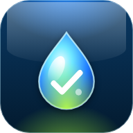

Instálala como appÍcono en tu inicio y funciona sin internet
Este navegador no deja guardar datos (¿modo incógnito?). Tus tareas se perderán al cerrar. Abre la app en una ventana normal.
Sin tareas todavía0%
Para instalarla en iPhone: toca Compartir y luego «Agregar a pantalla de inicio».
Tus tareas se guardan solo en este dispositivo. Haz una copia de vez en cuando.